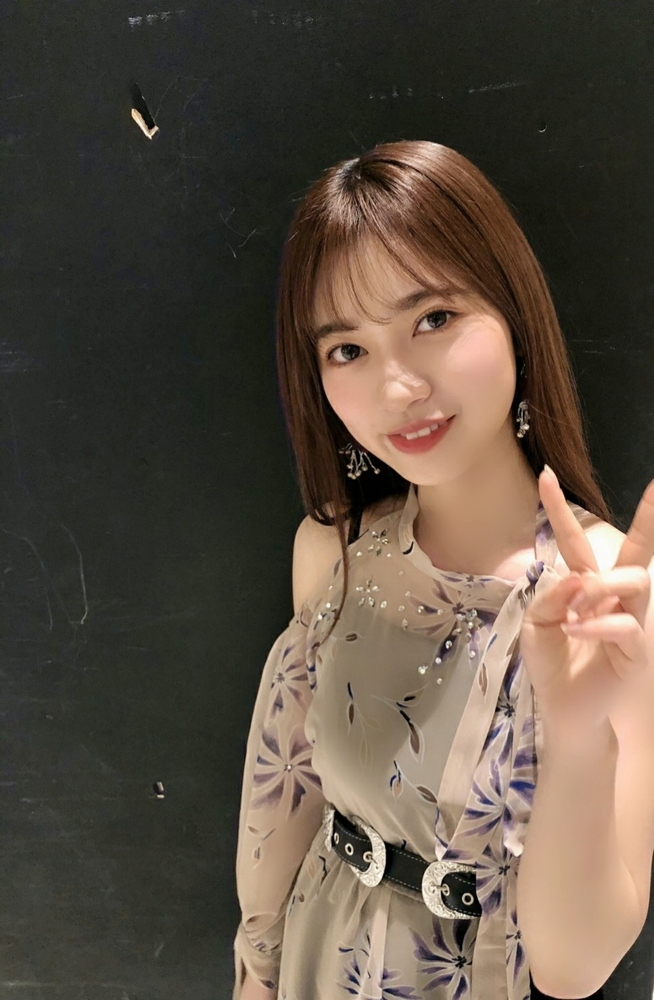
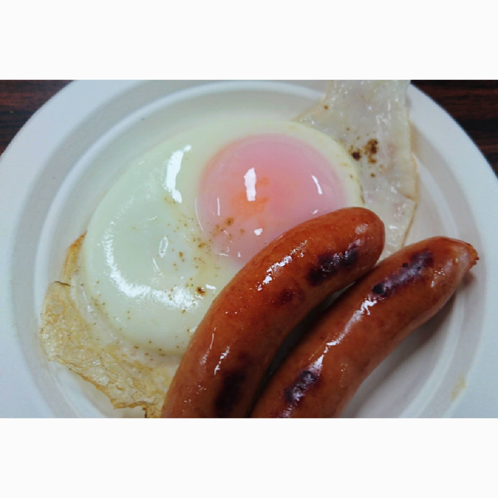
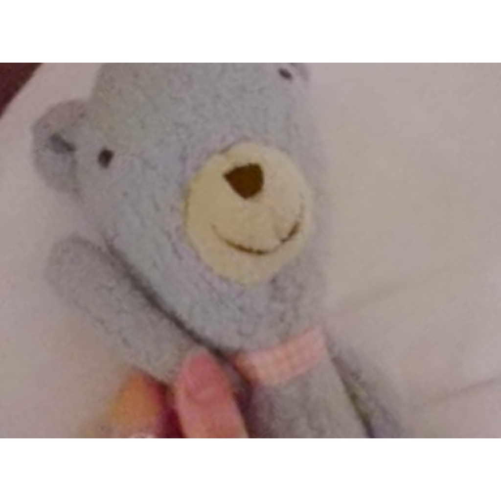

2020/0321Sat春は必ず来る

私は元気です！
だから、皆さんも体調、健康を１番に考えて日々次会える日まで備えてくださると嬉しいです。
また近々直接お会いしましょう。☺️
前回の早川ちゃんのブログ読みました
とても濃いbirthdayliveの思い出話に
私の事を書いてくれてありがとうー☺️
私もね早川ちゃんが作ってくれた目玉焼きがどんな美味しいご飯にも負けないくらい美味しかった！


あとホテルで一緒に寝てた相方のひょろひょろくんの写真
live期間に撮ったのはこの2枚の写真だけ、、、
birthdayliveでも全曲披露して
改めて自分の成長乃木坂46の成長を振り返ることが出来ました☺️
沢山思い出がありすぎて
なにから話せばいいのか分かりませんが
語らずとも歌で皆さんに思いを届けられた4日間になったのではと思います。
歌もダンスも上手い人なんてこの世に何万といるなかで
アイドルとして
乃木坂46として
寺田蘭世として
歌やダンス目線で沢山の人に思いを伝えられる場所があること皆さんが見つけてくれたこと見守ってくれていることを改めて感じられるドームでした。
乃木坂46には本当にいい曲が沢山ありますね。☺️
あの気持ちを安易に文章におこしたくないくらいに大切な瞬間でした。
自分に素直に
泣いたり笑ったり出来る人でよかった。
それは沢山悩んでも立ち上がったからこその支えてくれた人の優しさを感じられ触れてきたから得られた武器であり最高の宝物です。
沢山の思い出を感動をありがとうございます。
これからも沢山一緒に思い出を作っていきましょう。
何歳になっても自分に嘘なく
沢山笑って泣いて生きたいです。
ブログのオフショットに
霜降り明星のせいやさんがいらっしゃったらしく
許可もなしに申し訳ないことをしてしまいました、、、
ですが、同じタイミングに居てそして
誰かが探しだしてくれた偶然
私は嬉しく思っています。
そして凄く凄く驚いています。
この事をせいやさんの方からラジオですかねお話ししてくださったらしく
そしてそれがネットニュースになり
家族やスタッフさんメンバーが教えてくれて私の耳に届きました！！
凄い奇跡
これも何かのご縁だと思い
いつかお仕事ご一緒できたらいいなーと。☺️
人生いつどこで何があるかわからないなーと感じた出来事でした！
シンクロですねー。☺️
そんな本日はフジテレビさんにて
21:00～頃FNS音楽特別番組
宜しくお願い致します。☺️
2020/03/21 20:06


コメント(470)
握手会楽しみにしてる！
シンクロニシティめっちゃよかった！
ちゃんとみたよ！！
久しぶりのシンクロニシティは歓喜でしかなかった
供給をありがとう
FNS歌謡祭見ました！
シンクロニシティ素敵でした！！
おつかれーです！！
握手会で持ってきて欲しいな〜
4月あったら会えるね
楽しみにしているね
可愛かった素敵だった
これからもずっと応援するよ〜
FNS歌謡祭お疲れ様でした！
久しぶりにシンクロニシティが見れて嬉しかったです
個握が延期になりましたね
29日は自分の誕生日で直接祝ってほしかったですが
状況が状況なんで仕方ないです
また今度祝ってください
ちっぷ
いつもいつも本当に私の支えとなってます。ありがとう☺︎
握手会で持ってきて欲しいな〜
4月あったら会えるね
楽しみにしているね
また握手会再開するまで会えるの楽しみにしてるよー！
FNS音楽特別番組頑張れー！
暦の上と気候は春だけど本当の春はまだまだ先だよね。
いつかちゃんと春が来ていろいろと鎮静化して、普通の日常が来ることを祈ってます。
更新ありがとう！！！
大好きです！！！！！
いつも、これからもずっと応援してる！！
また会える日まで
FNSのシンクロでしっかりと蘭世が抜かれたシーン目に収めることが出来て、しやわせに今日は寝れます
お疲れ様でした
あと、名古屋での個握延期発表がありましたね、蘭世に会える日がまた伸びてしまって残念です
コロナウイルスが流行っているので身体に気をつけて頑張ってください
応援してます
まずは、FNS音楽特別番組お疲れ様でした
自分のポジションでパフォーマンスをしている
寺田さんは、何よりも輝いて見えました
ありがとう
素敵だったなぁ、シンクロニシティ大好きだなぁって
発売から約二年経ってる事も驚きです
寺田さんの綴る言葉一つ一つがとても好きです
乃木坂46の事がとても大切で
大好きなんだなって感じれるから
会えない時間が続きますが、
こうやって自分の言葉を発信してくれて
本当にありがとう
また、寺田さんと沢山お話がしたいです
それまで沢山話題溜めておきますね！
寺田さんが元気で何より
私も元気です！
こんなご時世ですが、
毎日健康に過ごせていることに
感謝して春からも頑張ります
えいえいおー！
相方のひょろひょろくんもありがとう
実は今作ろうとしています、ひょろひょろくん(笑)
また完成したら見て欲しいなぁ！
ではまた
大好き 好きぴ
ゆうき(ゆっちゃん)
蘭世先生が無事で良かったです！
蘭世先生も建康に気をつけて下さい。
live期間中しっかり寝て少しでも休めましたか？？
FNS音楽特別番組見ましたよ！
蘭世先生がソロで抜かれた時自然と可愛いって言ってました。笑
改めて蘭世先生のダンスが好きなことに気づけました！
お疲れ様でした！
広島住みの璃音
FNS特別音楽祭お疲れ様！
今日もソロで抜かれてたよー:-)
良い表情してたし可愛かった☺️
因みにFNS始まる前に前回のブログに頑張ってねってコメントしてたよ笑
バスラもお疲れ様でした！
僕は全日参加できなかったけど…
最高のLIVEになってよかったです☺️
円盤化したら買うぞー！
せいやさん写ってたのびっくりやね笑
人生いつどこで何が起こるかわからないから楽しいね！
今日もお疲れ様でした。
らんぜー！
大好きやでーー！
改めてバスラお疲れさまでした＼(^o^)／
やっぱり蘭世の表現力は大好きだよ(｡>﹏<｡)♡♡♡
ああ、目玉焼きとソーセージは凄く美味しそうなあ(｡>﹏<｡)
もっと4期生たちと仲良くなれたら嬉しいなあ(*´ω`*)
ひょろひょろくんも元気って嬉しいよ＼(^o^)／
これからも頑張って(/･ω･)/
「人生がなにか起こるが分からない」か？自分も今後もっと前向きで生きようかな？
FNS頑張って(/･ω･)/
蘭世ちゃんに会えるよう自分ができることからやっていきますね！
今日のFNS美しかったです！
握手会は延期されてしまって、ライブも延期で寂しいですが、画面越しに蘭世の元気な姿見れて僕もエネルギー貰いました！
もうすぐ2期生の日ですね。そして琴子の卒業が迫ってますね。残り少ない時間ですが、楽しい時間と思い出を沢山作ってください！
バースデーライブ思い出しました❗️
もっと乃木坂の曲を聴きたいです‼️
ワイが作る目玉焼きも負けませんよ
いつも蘭世さんには元気をもらってます！
いつもありがとう
あの写真はすごい奇跡だよねww
自分もあんなこと起きないかな()
シンクロニシティ見ました！
すごく輝いててあの一瞬でまた好きになりました！
蘭世さんに会える日がまだ先になると考えると辛くて辛くて...
その分今度会う時たくさん話せるように頑張ります！
本格的に体調が崩れやすい季節となりました。
体には気を付けてお仕事頑張ってください！
らんぜさんFNSお疲れ様でした！
信号を待つ間に~のところで抜かれてたとき目が合った気がしてめっちゃ嬉しかったです！
らんぜさんが元気であると言うだけでものすごく嬉しいです！
僕も元気です
今年は受験とかの影響でなかなか会えなくなるのが寂しいです
受験前最後は5/2のインテックスの個握行くのでまたそこで挨拶させていただきます！
らんぜさん今日もお疲れ様でした！
蘭世〜♪
ブログ更新ありがとう⁽⁽ ◟(∗ ˊωˋ ∗)◞ ⁾⁾
俺も変わらず元気だよ〜！！ また会える日を本当に楽しみにこれからも変わらず頑張っていくよおo(*´ゝ∀･)v
FNSさっき観てたよ！シンクロニシティで歌って踊る蘭世がいつも以上に輝いてたしすごくよかったで
寺田さんのブログを読んだら、縁というものは大切にしなければなと思いました。
お仕事などお忙しいとは思いますが、体調にはお気をつけください。
歌番組がんばってね！
握手会、私が最初に行くのは4/11でまだ何も告知はされていないけど…蘭世ちゃんが元気でいてくれることが一番です！なので状況が落ち着いてお互い楽しく会える日が早く来てほしいな。
沢山蘭世ちゃんに伝えたいことはあるけど…今ブログを読んで蘭世ちゃんの言葉が本当に好きだなって。こうやって素直に思っていることを伝えてくれる所が大好きです。こちらこそ、蘭世ちゃんと沢山想い出を作りたいです。よろしくお願いしますね！
シンクロでしたねー
「春は必ず来る」だしね！いつになるか分からないけど、蘭世ちゃんに会える日まで、蘭世ちゃんに元気をもらって、蘭世ちゃんを沢山応援して過ごしていきたいと改めて思いました。
改めていつもありがとう！
握手会延期になったけど、また会える日まで頑張ります
シンクロニシティ、まさにその通りだと思います。
これからも乃木坂46として共に坂を登って行きましょう！
すばらしいことです。
そして健康であること。
体調管理には気を付けて下さい。
いただき
今は多くのイベントが中止や延期になっていますからね…こればかりは仕方ない事ではありますが、何とか耐え抜きましょう！
まずは自分の体調を崩さない事が大切ですよね！
バースディライブでのメンバーやひょろひょろくんとのエピソード、ホッコリしますね(^^)
バースディライブは他のライブと違って、乃木坂の歴史を感じさせてくれるものですよね！それだけ蘭世さん達の思いも表現されるライブなので、毎年とても楽しみにしていますし、感動させて頂いています！
これまでの期間、メンバー同士で支え合い、自分に素直でいることで成長できたのではないでしょうか。蘭世さんは特に着飾らないで素を出してくれる点が魅力の一つですよ！
そして、我々ファンも出来ることから蘭世さんを応援して行きますよ〜蘭世さん推しは皆さん熱いですからね！
せいやさんと何らかの形で共演できると嬉しいですよね！楽しみになっちゃいます〜
これからも応援しています！
元気ならよかった♫
握手会延期なっちゃったけど、次会える日まで楽しみにまってるね！春は必ず来るから(๑¯◡¯๑)
せーらちゃん目玉焼き作ってくれたんか！しかも凄く凄く半熟感ある！
羨ましいぞー( ≖‿≖)
ひょろひょろくんは日本全国どこにいく時も一緒なんやな♫
バスラは俺も4日間行ったよ！地元のナゴヤドームでの乃木坂ライブは一味も二味も違いました！蘭世の歌声も良かった(๑¯◡¯๑)
こちらこそありがとう！まだまだ蘭世に付いて行きますぜ！
偶然とは言え、撮った写真に芸能人が写ってるのはすごいよな！
俺今筋トレ頑張ってるんやけど、この前痩せたね！筋肉すごい！って友達に褒めてもらえた！小さい小さい事ですが、これが最近の幸せな出来事かな。褒められるっていい気持ちね♫
可愛い❤️大好きです❣️
ちゃんと見つけたよ！
みり愛も日奈子も絢音ちゃんもいて良き良きやったよ。
バスラも4日間フルで観に行きました。
日奈子との自分のこと、思わずもらい泣き…エモいとしか言葉がみつからなかった！
バスラの感想、5月の大阪個握で話せたらいいなー
とにかく健康第一、安心安全で行きましょう！！
モバメで起こしてもらえたのでぎり間に合った！
みんなの元気そうな姿を見て改めて色々な事に感謝したいと思える
シンクロニシティ 観るたびに回を重ねる毎に
蘭世さんのパフォーマンスがさらに良くなっていると
とても上から目線で確信しました
今日は家族で外食
バカ話しながらの食事で
幸せを感じてました
(^o^)
これからも頑張ってね
FNS音楽特別番組で蘭世ちゃん見つけたぞー！ シンクロ二シティのパフォーマンス良かったですぜ！
今日もお疲れ様(^^)
コメントする